측량및지형공간정보산업기사 (2017-03-05 기출문제)
1과목: 응용측량
1. 축척 1:500의 지형도에서 3번의 길이가 각각 20.5cm, 32.4cm, 28.5cm이었다면 실제면적은?
- 288.5cm2
- 866.6cm2
- 1443.5cm2
- 7213.3cm2
(정답률: 56%)

2. 하천측량에서 일반적으로 유속을 측정하는 방법과 그 측정 위치에 관한 설명으로 옳지 않은 것은?
- 수심이 깊고 유속이 빠른 곳에서는 수면에서 측정하여 그 값을 평균유속으로 한다.
- 보통 1점만을 측정하여 평균유속으로 결정할 때에는 수면으로부터 수심 6/10인 곳에서 측정한다.
- 2점을 측정할 때에는 수면으로부터 수심의 2/10, 8/10인 곳을 측정하여 산술평균하여 평균유속으로 한다.
- 3점을 측정할 때에는 수면으로부터 수심의 2/10, 6/10, 8/10인 곳에서 유속을 측정하고 1/4(V0.2+2V0.6+V0.8)로 평균유속을 구한다.
(정답률: 74%)
3. 교점 P에 접근할 수 없는 그림과 같은 곡선설치에서 C점으로부터 B, C까지의 거리 X는? (단, σ=50°, β=90°, γ=40°, CD=200m, R=300m)
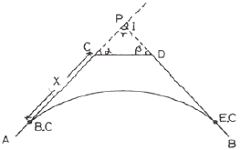
- 824.2m
- 513.1m
- 311.1m
- 288.7m
(정답률: 51%)
4. 하천의 수애선을 결정하는 수위는?
- 최저수위
- 최고수위
- 갈수위
- 평수위
(정답률: 77%)
5. 곡선반지름 R=500m인 원곡선을 설계속도 100km/h로 설계하려고 할 때, 켄트(cant)는? (단, 궤간 b는 1067mm)
- 100mm
- 150mm
- 168mm
- 175mm
(정답률: 52%)
6. 토지의 면적분할에서 △ABC의 토지를 BC에 평행한 직선 DE로 △ADE : □BCED=2:3의 비가 되도록 면적을 분할하는 경우 AD의 길이는?
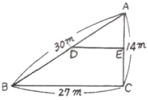
- 18.52m
- 18.97m
- 19.79m
- 23.24m
(정답률: 62%)
7. 터널 내 측량 시 중심선의 이동과 관련하여 점검해야 할 사항으로 가장 거리가 먼 것은?
- 터널 입구 부근에 설치한 터널 외 기준점의 이동 여부
- 터널 내에 설치된 다보(dowel)의 이동 여부
- 측량기계의 상태 여부
- 터널 내부의 환기 상태
(정답률: 83%)
8. 아래 지역의 계산 결과가 940m3 이었다면 절토량과 설토량이 같게 되는 기준면으로부터의 높이는?
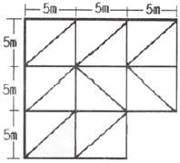
- 3.70m
- 4.70m
- 6.70m
- 9.70m
(정답률: 54%)
9. 그림과 같은 토지의 면적을 심프슨 제1공식을 적용하여 구한 값이 44m2라면 거리 D는?
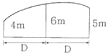
- 4.0m
- 4.4m
- 8.0m
- 8.8m
(정답률: 64%)
10. 터널측량에 관한 설명으로 틀린 것은?
- 터널측량은 크게 터널 외 측량, 터널 내외 연결측량으로 구분할 수 있다.
- 광의의 터널에서 수직터널과 경사터널 또는 지하발전소나 지하저유소와 같은 인공적 공동(公同)도 포함된다.
- 터널측량은 터널 내 측량, 터널 외 측량, 터널내외 연결측량의 순서로 행한다.
- 터널 내의 측량 시에는 기계의 십자선과 표척 등에 조명이 필요하다.
(정답률: 69%)
11. 그림과 같은 단면을 갖는 흙의 토량은? (단, 각주공식을 사용하고, 주어진 면적은 양 단면적과 중앙 단면적이다.
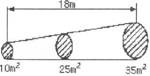
- 4⑤m3
- 420m3
- 435m3
- 450m3
(정답률: 64%)
12. 유토곡선(mass curve)을 작성하는 목적과 거리가 먼 것은?
- 노선의 횡단 결정
- 토공기계의 선정
- 토량의 배분
- 토량의 운반거리 산출
(정답률: 66%)
13. 해수면이 약최고고조면(일정기간 조석을 관측하여 분석한 결과 가장 높은 해수면)에 이르렀을 때의 육지와 해수면의 경계를 조사하는 것은?
- 지형측량
- 지리조사
- 수심측량
- 해안선 조사
(정답률: 85%)
14. 노선 결정에 고려하여야 할 사항에 대한 설명으로 옳지 않은 것은?
- 가능한 한 경사가 완만할 것
- 절토의 운반거리가 짧을 것
- 배수가 완전할 것
- 가능한 한 곡선으로 할 것
(정답률: 77%)
15. 노선측량에서 중심선측량에 대한 설명으로 거리가 먼 것은?
- 현장에서 교점 및 곡선의 접선을 결정한다.
- 교각을 실측하고 주요점, 중간점 등을 설치한다.
- 지형도에 비교노선을 기입하고 평면선형을 검토하여 결정한다.
- 지형도에 의해 중심선의 좌표를 계산하여 현장에 설치한다.
(정답률: 55%)
16. 하천측량에서 유속관측 장소 선정의 조건으로 옳지 않은 것은?
- 하상의 요철이 적으며 하상경사가 일정한 곳
- 곡류부로서 유량의 변동이 급격한 곳
- 하천 횡단면 형상이 급변하지 않은 곳
- 관측이 편리한 곳
(정답률: 83%)
17. 노선의 단곡선에서 교각이 45°, 곡선반지름이 100m, 곡선 시점까지의 추가거리가 120.85m일 때 곡선 종점의 추가거리는?
- 225.38m
- 199.39m
- 124.54m
- 78.54m
(정답률: 58%)
18. 노선 기점에서 400m 위치에 있는 교점의 교각이 80°인 단곡선에서 곡선반지름이 100m인 경우, 시단현에 대한 편각은?
- 0° 5‘ 44“
- 1° 7‘ 12“
- 4° 36‘ 34“
- 5° 43‘ 46“
(정답률: 56%)
19. 클로소이드(clothoid)의 성질에 대한 설명으로 옳은 것은?
- 모든 클로소이드는 닮은 꼴이다.
- 클로소이드는 타원의 일종이다.
- 클로소이드의 모든 요소는 길이의 단위를 갖는다.
- 클로소이드는 형태는 다양하지만 크기는 일정하게 유지된다.
(정답률: 67%)
20. 터널 내 수준측량에서 천장에 측점이 설치되어 있을 때, 두 점 A, B간의 경사거리가 60m이고, 기계고가 1.7m, 시준고가 1.5m, 연직각이 3°일 때, A점과 B점의 고저 차는?
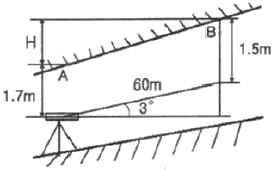
- 2.94m
- 3.34m
- 59.7m
- 60.12m
(정답률: 57%)
2과목: 사진측량 및 원격탐사
21. 수치영상의 재배열(Resampling) 방법 중 하나로 가장 계산이 단순하고 고유의 픽셀값을 손상시키지 않으나 영상이 다소 거칠게 표현되는 방법은?
- 3차회선 내삽법(Cubic Convolution)
- 공일차 내삽법(Bilinear Interpolation)
- 공3차회선 내삽법(Bicubic Convolution)
- 최근린 내삽법(Nearest Neighbour Interpolation)
(정답률: 78%)
22. 항공사진측량에 의해 제작된 지형도(지도)의 상으로 옳은 것은?
- 투시투영(perspective projection)
- 중심투영(central projection)
- 정사투영(orthognal projection)
- 외심투영(external projection)
(정답률: 75%)
23. 어느 지역의 영상과 동일한 지역의 지도이다. 이 자료를 이용하여 “밭”의 훈련지역(training field)을 선택한 결과로 적합한 것은?
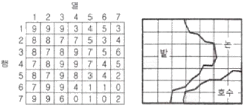
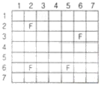
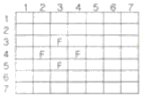
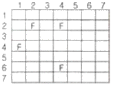
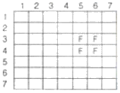
(정답률: 69%)
24. 영상재배열(image resampling)에 대한 설명으로 옳은 것은?
- 노이즈 제거를 목적으로 한다.
- 주로 영상의 기하보정 과정에 적용된다.
- 토지피복 분류 시 무감독 분류에 주로 활용된다.
- 영상의 분광적 차를 강조하여 식별을 용이하게 해준다.
(정답률: 64%)
25. 기복이 심한 지형을 경사로 촬영한 사진에 대하여 경사와 비고에 의한 편위를 수정한 정밀사진지도를 만들기 위하여 필요한 작업은?
- 시차측정에 의한 사진제작
- 정사투영기에 의한 사진제작
- 편위수정기에 의한 사진제작
- 세부도화
(정답률: 56%)
26. 항공사진의 특수 3점에 해당되지 않는 것은?
- 주점
- 연직점
- 등각점
- 수평점
(정답률: 76%)
27. 동서 30km, 남북 20km인 지역에서 축척 1:50000의 항공사진 1장의 스테레오 모델에 촬영된 면적이 16.3km2이다. 이 지역을 촬영하는 데 필요한 사진 매수는? (단, 안전율은 30%이다.)
- 48장
- 55장
- 63장
- 68장
(정답률: 50%)
28. 항공사진측량에서 산악지역에 대한 설명으로 옳은 것은?
- 산이 많은 지역
- 평탄지역에 비하여 경사조정이 편리한 곳
- 표정 시 산정과 협곡에 시차분포가 균일한 곳
- 산지모델 상에서 지형의 고저차가 촬영고도의 10%이상인 지역
(정답률: 75%)
29. 우리나라에서 개발한 지구관측용 다목적 실용위성은?
- 무궁화 위성
- 우리별 위성
- 아리랑 위성
- 퀵버드 위성
(정답률: 75%)
30. 인공위성궤도의 종류 중 태양광 입사각이 거의 일정하여 센서의 관측 조건은 일정하게 유지할 수 있는 것으로 옳은 것은?
- 정지 궤도
- 태양 동기식 궤도
- 고타원 궤도
- Molniya 궤도
(정답률: 70%)
31. 초점거리 11cm, 사진크기 18cm×18cm의 카메라를 이용하여 축척 1:20,000으로 촬영한 항공사진의 주점기선장이 72mm일 때 비고 50m에 대한 시차 차는?
- 0.83mm
- 1.26mm
- 1.33mm
- 1.64mm
(정답률: 47%)
32. 촬영고도 5000m를 유지하면서 초점거리 150mm인 카메라로 촬영한 연직사진에서 실제 길이 800m인 교량의 길이는?
- 15mm
- 20mm
- 24mm
- 34mm
(정답률: 70%)
33. 해석적 표정에 있어서 관측된 상좌표로부터 사진좌표로 변환하는 작업은?
- 상호표정
- 내부표정
- 절대표정
- 접합표정
(정답률: 69%)
34. 초점거리 15cm, 사진크기 23cm×23cm의 카메라로 축척 1:20000인 항공사진을 촬영하였다. 촬영기준면(표고 0m)에서 종중복(over lap)이 60%였을 때 표고 200m인 평탄지의 종중복도는?(오류 신고가 접수된 문제입니다. 반드시 정답과 해설을 확인하시기 바랍니다.)
- 36%
- 43%
- 57%
- 60%
(정답률: 47%)
35. 도화기의 발달과정 경로를 옳게 나열한 것은?
- 기계도화기-해석식도화기-수치도화기
- 수치도화기-해석식도화기-기계식도화기
- 기계식도화기-수치도화기-해석식도화기
- 수치도화기-기계식도화기-해석식도화기
(정답률: 73%)
36. 상호표정(relative orientation)에 대한 설명으로 옳은 것은?
- z축 방향의 시차를 소거하는 것이다.
- y축 방향의 시차(종시차)를 소거하는 것이다.
- x축 방향의 시차(횡시차)를 소거하는 것이다.
- x-y축 방향의 시차를 소거하는 것이다.
(정답률: 65%)
37. 일반적으로 오른쪽 안경렌즈에는 적색, 왼쪽 안경렌즈에는 청색을 착색한 안경을 쓰고 특수하게 인쇄된 대상을 보면서 입체시를 구성하는 것은?
- 순동입체시
- 편광입체시
- 여색입체시
- 정입체시
(정답률: 70%)
38. 사진측량의 분류 중 촬영방향에 의한 분류에 속하는 것은?
- 경사사진
- 항공사진
- 수중사진
- 지상사진
(정답률: 69%)
39. SAR(Synthetic Aperyure Radar)영상의 특징이 아닌 것은?
- 태양광에 의존하지 않아 밤에도 영상의 촬영이 가능하다.
- 구름이 대기 중에 존재하더라도 영상을 취득할 수 있다.
- 마이크로웨이브를 이용하여 영상을 취득한다.
- 중심투영으로 영상을 취득하기 때문에 영상에서 발생하는 왜곡이 광학영상과 비슷하다.
(정답률: 60%)
40. 다음 중 1장의 사진으로 할 수 있는 작업은?
- 대상물의 정확한 3차원 좌표 취득
- 사진판독
- 수치표고모델(DEM) 생성
- 수치지도 작성
(정답률: 77%)
3과목: GIS 및 GPS
41. 지리정보시스템(GIS)의 주요 활용 분야와 가장 거리가 먼 것은?
- 도시정보시스템(UIS)
- 경영정보시스템(MIS)
- 토지정보시스템(LIS)
- 환경정보시스템(EIS)
(정답률: 78%)
42. GNSS 관측을 통해 직접 결정할 수 있는 높이는?
- 지오이드고
- 정표고
- 역표고
- 타원체고
(정답률: 59%)
43. 위상(Topology)관계에 대한 설명으로 옳지 않은 것은?
- 공간자료의 상호 관계를 정의한다.
- 인접한 점, 선, 면 사이의 공간적 대응 관계를 나타낸다.
- 연결성, 인접성 등과 같은 관계성을 통하여 지형지물의 공간 관계를 인식한다.
- 래스터데이터는 위상을 갖고 있으므로 공간분석의 효율성이 높다.
(정답률: 73%)
44. 지리정보시스템(GIS)의 자료입력 방법이 아닌 것은?
- 수동방식(디지타이저)에 의한 방법
- 자동방식(스캐너)에 의한 방법
- 항공사진에 의한 해석도화 방법
- 잉크젯 프린터에 의한 도면 제작 방법
(정답률: 71%)
45. 다각형의 경계가 인접지역의 두 점들로부터 같은 거리에 놓이게 하는 방법으로 구성되는 것은?
- 불규칙 삼각망(TIN)
- 티센(Thiessen) 다각형
- 폴리곤(Polygon)
- 타일(Tile)
(정답률: 53%)
46. 수치표고모형(Digital Elecation Model)의 활용 내용과 거리가 먼 것은?
- 노선설계 및 댐의 위치 선정
- 수치지형도 구조화편집
- 지형의 분석
- 건물의 3차원 모델링
(정답률: 37%)
47. GPS 기준국과 이동국 사이의 기선벡터가 각각 △X=200m, △Y=300m, △Z=50m일 때 기준국과 이동국 사이의 공간 거리는?
- 234.52m
- 360.56m
- 364.01m
- 370.12m
(정답률: 50%)
48. GNSS 측량을 우주부분에 활용할 때 적당하지 않은 것은?
- 정지위성의 위치 결정
- 로켓의 궤도 추적
- 저고도 관측위성의 위치 결정
- 미사일 정밀 유도
(정답률: 57%)
49. 지리정보시스템(GIS)의 주요 기능으로 거리가 먼 것은?
- 출력(output)
- 자료 입력(input)
- 검수(quality check)
- 자료 처리 및 분석(analysis)
(정답률: 69%)
50. 다음 중 GPS 위성 궤도에 대한 설명으로 옳지 않은 것은?
- 8개의 궤도면으로 이루어져 있다.
- 경사각은 55°이다.
- 타원궤도이다.
- 고도는 약 20,200km이다.
(정답률: 64%)
51. 레스터데이터의 특징이 아닌 것은?
- 벡터데이터보다 데이터 구조가 단순하다.
- 데이터량이 해상도의 제곱에 비례한다.
- 벳터데이터보다 시뮬레이션을 위한 처리가 복잡하다.
- 벡터데이터보다 빠른 데이터 초기 입력이 가능하다.
(정답률: 65%)
52. GNSS(Global Navigational Sateonal System)위성과 관련 없는 것은?
- GPS
- GLONASS
- GALILEO
- GEOEYE
(정답률: 68%)
53. 지리정보시스템(GIS)에서 공간데이터베이스의 유지ㆍ보안과 관련이 없는 것은?
- 전체 데이터베이스의 주기적 백업(backup)
- 암호 등 제반 안전장치를 통해 인가받은 사람만이 사용할 수 있도록 제한
- 지속적인 데이터의 검색
- 저력 손실에 대비한 UPS(Uninterruptible Power Supply)
(정답률: 63%)
54. 화재나 응급 시 소방차나 구급차의 운전경로 또는 항공기의 운항경로 등의 최적경로를 결정하는데 가장 적합한 분석 방법은?
- 관망 분석
- 중첩 분석
- 버퍼링 분석
- 근접성 분석
(정답률: 69%)
55. 지리정보시스템(GIS)에서 사용하고 있는 공간데이터를 설명하는 기능을 가지며 데이터의 생산자, 좌표계 등 다양한 정보를 포함하고 있는 것은?
- Metadata
- Data Dictionary
- Extensible Markup Language
- Geospatial Data Abstraction Library
(정답률: 81%)
56. 지리정보시스템(GIS)에서 다루어지는 지리정보의 특성이 아닌 것은?
- 위치정보를 갖는다.
- 위치정보와 함께 관련 속성정보를 갖는다.
- 공간객체 간에 존재하는 공간적 상호 관계를 갖는다.
- 시간이 흘러도 변하지 않는 영구성을 갖는다.
(정답률: 77%)
57. 관계형 데이터베이스(RDBMS : Relational DBMS)의 특징으로 틀린 것은?
- 테이블의 구성이 자유롭다.
- 모형 구성이 단순하고, 이해가 빠르다.
- 필드는 여러 개의 데이터 항목을 소유할 수 있다.
- 정보추출을 위한 질의 형태에 제한이 없다.
(정답률: 39%)
58. 래스터(또는 그리드)저장 기법 중 셀 값을 대별적으로 저장하는 대신 각각의 변 진행에 대하여 속성값, 위치, 길이를 한 번씩만 저장하는 방법은?
- 사지수형 기법
- 블록 코드 기법
- 체인 코드 기법
- Run-length 코드 기법
(정답률: 61%)
59. 지리정보시스템(GIS) 자료의 저장방식을 파일 저장방식과 DBMS(Data Base Management System)방식으로 구분할 때 파일 저장방식에 비해 DBMS 방식이 갖는 특징으로 옳지 않은 것은?
- 시스템의 구성이 간단하다.
- 새로운 응용프로그램을 개발하는데 용이하다.
- 자료의 신뢰도가 일정 수준으로 유지될 수 있다.
- 사용자 요구에 맞는 다양한 양식의 자료를 제공할 수 있다.
(정답률: 60%)
60. 다음 중 벡터파일 형식에 해당되는 것은?
- BMP 파일 포맷
- DXF 파일 포맷
- JPG 파일 포맷
- GIF 파일 포맷
(정답률: 75%)
4과목: 측량학
61. 수준측량에 관한 설명으로 옳지 않은 것은?
- 전시와 후시의 거리를 같게 하면 시준선 오차를 소거할 수 있다.
- 출발점에 세운 표척을 도착점에서도 세우게 되면 눈금오차를 소거할 수 있다.
- 주의 깊게 측량하여 왕복관측을 하지 않는 것을 원칙으로 한다.
- 기계의 정치 수는 짝수 회로 하는 것이 좋다.
(정답률: 73%)
62. 폭이 좁고 거리가 먼 지역에 적합하여 하천측량, 노선측량, 터널측량 등에 이용되는 삼각망은?
- 방산식삼각망
- 단열삼각망
- 복열식삼각망
- 직교삼각망
(정답률: 78%)
63. 우리나라 수치지형도의 표기방법 중 7자리 숫자의 도엽번호는 축척이 얼마인가?
- 1:50000
- 1:25000
- 1:10000
- 1:5000
(정답률: 41%)
64. 한 기선의 길이를 n회 반복 측정한 경우, 최확값의 평균제곱근오차에 대한 설명으로 옳은 것은?
- 관측획수의 비례한다.
- 관측획수의 제곱근에 비례한다.
- 관측획수의 제곱에 비례한다.
- 관측획수의 제곱근에 반비례한다.
(정답률: 41%)
65. 강철줄자로 실측한 길이가 246.241m이었다. 이 때 온도가 10℃라면 온도에 의한 보정량은?(단, 강철줄자의 온도 15℃를 기준으로 한 팽창계수는 0.0000117/℃이다.)
- -10.4mm
- 10.4mm
- 14.4mm
- -14.4mm
(정답률: 44%)
66. 축척 1:50000의 지형도에서 A점의 표고는 308m, B점의 표고는 346m일 때, A점으로부터  상에 있는 표고 332m 지점까지의 거리는? (단,
상에 있는 표고 332m 지점까지의 거리는? (단,
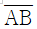
는 등경사이며, 도상거리는 12.8mm이다.)- 384m
- 394m
- 404m
- 414m
(정답률: 40%)
67. 지구표면에서 반지름 55km까지를 평면으로 간주한다면 거리의 허용정밀도는?(단, 지구 반지름은 6,370km이다.)
- 약 1/40000
- 약 1/50000
- 약 1/60000
- 약 1/70000
(정답률: 36%)
68. 레벨의 조정이 불완전하여 시준선이 기포관축과 평행하지 않을 때 표적눈금의 읽음값에 생긴 오차와 시준거리와의 관계로 옳은 것은?
- 시준거리와 무관하다.
- 시준거리에 비례한다.
- 시준거리에 반비례한다.
- 시준거리의 제곱근에 비례한다.
(정답률: 41%)
69. 그림과 같이 4개의 삼각망으로 둘러싸여 있는 유심삼각망에서 γ1+γ2+γ3+γ4=360° 00‘ 08” 에 대한 삼각망 조정 결과로 옳은 것은?
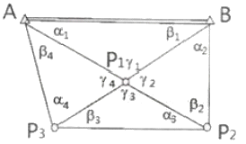
- α1에는 -1“, β1에는 -1, γ1에는 +2”씩을 조정한다.
- α1에는 -1“, β1에는 -1, γ1에는 -2”씩을 조정한다.
- α1에는 +1“, β1에는 +1, γ1에는 -2”씩을 조정한다.
- α1에는 +1“, β1에는 +1, γ1에는 +2”씩을 조정한다.
(정답률: 59%)
70. 오차 중에서 최소제곱법의 원리를 이용하여 처리할 수 있는 것은?
- 누적오차
- 우연오차
- 정오차
- 착오
(정답률: 71%)
71. 수준측량에서 5km 왕복측정에서 허용오차가 ±10mm라면 2km 왕복측정에 대한 허용오차는?
- ±9.5mm
- ±8.4mm
- ±7.2mm
- ±6.3mm
(정답률: 52%)
72. 삼각점을 선정할 때의 고려사항에 대한 설명으로 옳지 않은 것은?
- 삼각형의 내각은 60°에 가깝게 하며, 불가피할 경우에도 90°보다 크지 않아야 한다.
- 상호간의 시준이 잘 되어 연결 작업이 용이해야 한다.
- 불규칙한 공선 아지랑이 등의 영향이 적은 곳이 좋다.
- 지반이 견고하여야 하며 이동, 침하 및 동결 지반은 피한다.
(정답률: 73%)
73. 각과 거리 관측에 대한 설명으로 옳은 것은?
- 기선측량의 정밀도가 1/100000이라는 것은 관측거리 1km에 대한 1cm의 오차를 의미한다.
- 천정각은 수평각 관측을 의미하며 고저각은 높낮이에 대한 관측각이다.
- 각관측에서 배각관측이란 정위관측과 반위관측을 의미한다.
- 각관측에서 관측방향이 15“ 틀어진 경우 2km 앞에 발생하는 위치오차는 1.5m이다.
(정답률: 51%)
74. 망원경의 배율에 대한 설명으로 옳은 것은?
- 대물렌즈와 접안렌즈의 초점거리의 비
- 대물렌즈와 접안렌즈의 초점거리의 곱
- 대물렌즈와 접안렌즈의 초점거리의 합
- 대물렌즈와 접안렌즈의 초점거리의 차
(정답률: 68%)
75. 기본측량성과의 검증을 위해 검증을 의뢰받은 기본측량성과 검증기관은 며칠 이내에 검증결과를 제출하여야 하는가?
- 10일
- 20일
- 30일
- 60일
(정답률: 69%)
76. 측량기기인 토털 스테이션(Total Station)과 지피에스(GPS) 수신기의 성능검사 주기는?
- 1년
- 2년
- 3년
- 5년
(정답률: 82%)
77. 공공측량의 실시공고에 포함되어야 할 사항이 아닌 것은?
- 측량의 종류
- 측량의 규모
- 측량의 목적
- 측량의 실시기간
(정답률: 65%)
78. “측량기록”의 용어 정의로 옳은 것은?
- 측량성과를 얻을 때까지의 측량에 관한 작업의 기록
- 측량기본계획 수립의 작업 기록
- 측량을 통하여 얻은 최종 결과
- 측량 외업에서의 작업 기록
(정답률: 75%)
79. 정당한 사유 없이 측량을 방해한 자에 대한 벌칙 기준은?
- 3년 이하의 징역 또는 3천만원 이하의 벌금
- 2년 이하의 징역 또는 2천만원 이하의 벌금
- 1년 이하의 징역 또는 1천만원 이하의 벌금
- 300만원 이하의 과태료
(정답률: 54%)
80. 측량기준점에서 국가기준점에 해당되지 않는 것은?
- 삼각점
- 중력점
- 지자기점
- 지적도근점
(정답률: 68%)
20.5 x 500cm = 10250cm2
32.4 x 500cm = 16200cm2
28.5 x 500cm = 14250cm2
이제 이들 면적을 모두 더하면 실제면적을 구할 수 있다.
10250cm2 + 16200cm2 + 14250cm2 = 40600cm2
따라서, 실제면적은 40600cm2이다. 하지만 보기에서는 이 중에서 7213.3cm2이 정답으로 주어졌다. 이는 문제에서 "최대한 간단명료하게" 설명하라는 조건을 고려하여, 실제면적을 구한 후에 10의 자리에서 반올림하여 구한 값이다.